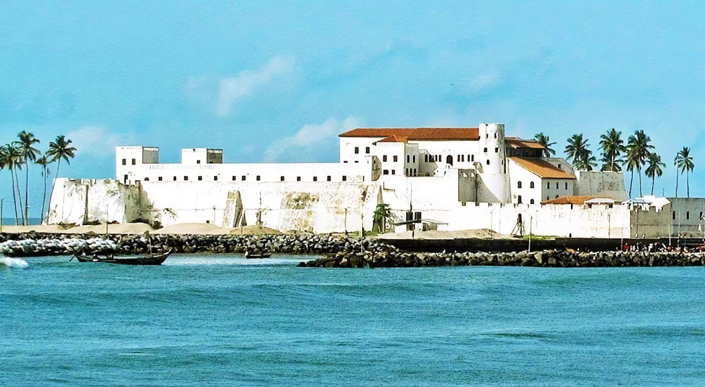

Welcome to my page
Hope you have a lovely stay while you are viewing my content; and please do let me know what you think...

Hey there! I'm Timothy and i'm 27 years of age. I live in Accra at a town called Lapaz. I study at IPMC persuing Software Engineering.

Elmina Castle, fortified castle in Elmina, Ghana that is thought to be the oldest surviving European
building in Africa south of the Sahara. Built in 1482 by the Portuguese to protect the gold trade,
Elmina Castle later became a major center of the transatlantic slave trade. St. George's d'Elmina Castle,
is one the oldest European buildings outside Europe, and the histiric town of Elmina is believed to be the
loacation of the first point of contact between Europeans and sub-Saharan Africans.